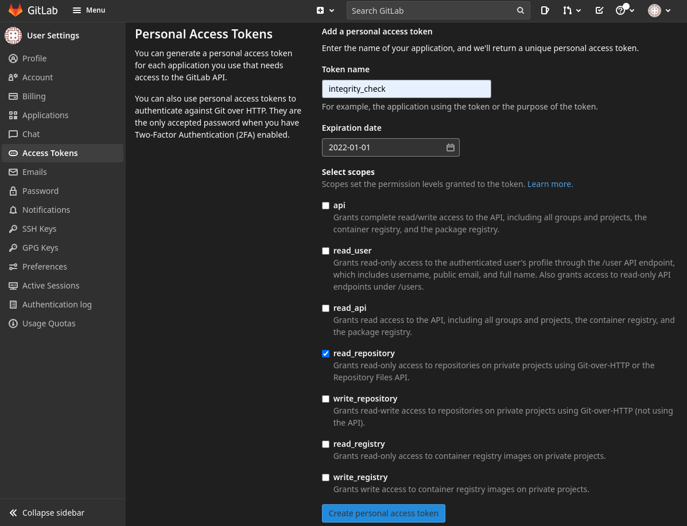
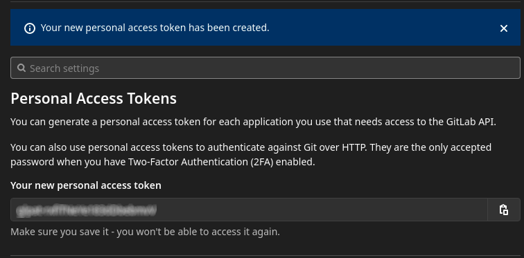
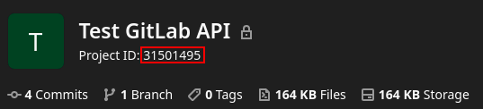
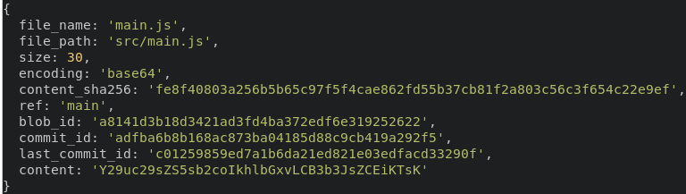
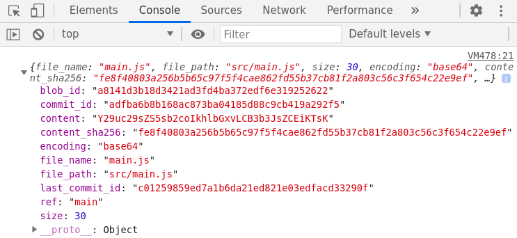

The other day at work I needed a way to verify the integrity of a file under source control (GitLab) against a local copy of the same file, which was potentially modified or outdated.
I decided to take the opportunity to learn a bit about using the GitLab API. Here’s a breakdown of what I learned:
- How to create, use and manage access tokens.
- Access the GitLab API programmatically using JavaScript.
- How to compare files “by hash” instead of by content.
Creating an Access Token
Depending on what endpoints of the GitLab API you need to access, a personal access token might be required.
In my case, I needed read access to a private repository, therefore I created a personal token with the read_repository scope selected.
The steps to create the access token are as follows:
- Navigate to the Access Tokens page
- Enter a token name, expiration date and select the desired scopes.

- Click on Create personal access token and make sure to save the token somewhere.

Using the GitLab API
According to the GitLab doc we can use the
/projects/:id/repository/files/:file_path endpoint to query information about a file in the repository
such as the name, size or content.
The project id can be found in the main page of the repository and the file path is the URL encoded full path to the file from the root of the repository.

The documentation also comes with an example request using curl but we are going to use Node.js.
Instead of using the https module that comes with Node.js by default, we are going to use the package node-fetch so we can use the same Fetch API so our code can run both in a browser environment as well as in a server (Node.js) environment.
So first things first, let’s install node-fetch using npm.
$ npm install node-fetch
The code necessary to query a file from our GitLab repository might look something like this:
// main.mjs
import fetch from 'node-fetch';
async function queryFile(filePath) {
const gitlabToken = '<YOUR ACCESS TOKEN>';
const projectId = 31501495;
const uriPath = encodeURIComponent(filePath);
const branchName = 'main';
const host = 'https://gitlab.com';
const url = `${host}/api/v4/projects/${projectId}` +
`/repository/files/${uriPath}?ref=${branchName}`;
const response = await fetch(url, {
method: "GET",
headers: {
"Content-Type": "application/json",
"PRIVATE-TOKEN": gitlabToken,
},
});
const json = await response.json();
return json;
}
const fileInfo = await queryFile("src/main.js");
console.log(fileInfo);
We can run it like this:
$ node main.mjs
And the result looks like this:

NOTE: You can also remove the import from the first line and run the exact same code from your developer tools of your browser.

Computing the SHA-256
The last piece of the puzzle is to compare the meta information that we got from the last version of the file in the repository against the current version of the file stored locally.
The meta information of the file includes the field content_sha256 containing the SHA-256 of the file. We can compute the same kind of hash for our file stored locally and then check if the two hashes match.
We can use the webcrypto Node.js module which is mostly compatible with the Web Crypto API available in browsers. Again, the only difference between the browser version and the Node.js version should be the way we import modules.
import * as fs from 'fs';
import {webcrypto as crypto} from 'crypto';
// ...
async function computeHash(contents) {
const utf8Encoded = new TextEncoder().encode(contents);
const hashBuffer = await crypto.subtle.digest("SHA-256", utf8Encoded);
const hashBytes = Array.from(new Uint8Array(hashBuffer));
const hashHex = hashBytes.map(b => b.toString(16).padStart(2, "0")).join("");
return hashHex;
}
const fileContents = fs.readFileSync("PATH TO LOCAL FILE");
if (computeHash(fileContents) !== fileInfo.content_sha256) {
console.error("Hashes don't match!");
}